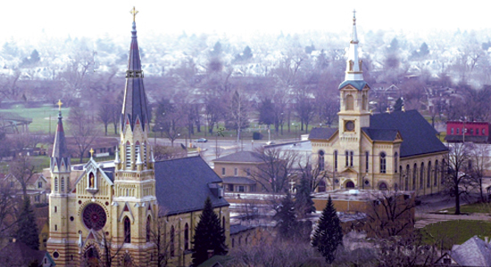
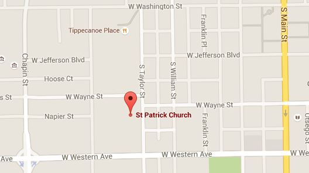
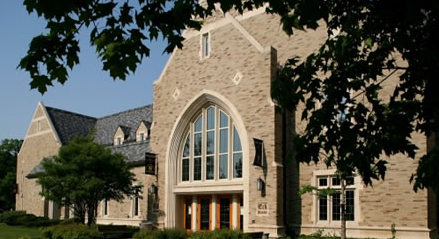
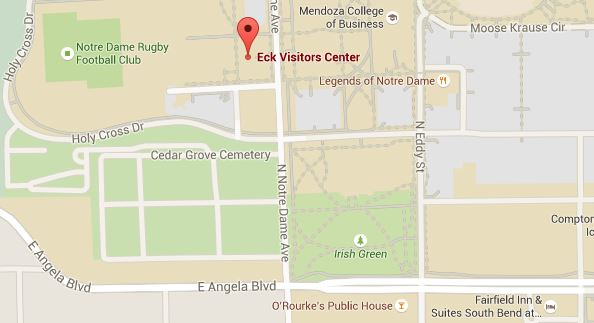

wedding
2:30 pm
October 3rd, 2015
Saint Patrick's Church
309 S. Taylor St.
South Bend, IN

Saint Patrick's Church was founded by Irish immigrants in 1858 and is located in the National West
Washington Historic District of South Bend.

Google Map Link
reception
5:30 pm
October 3rd, 2015
Eck Visitor Center
University of Notre Dame
South Bend, IN

The Eck Visitor Center is located next to the Hammes Bookstore
on the campus of the University of Notre Dame. It is the home to the
Alumni Association and serves as a visitors' center.

Google Map Link